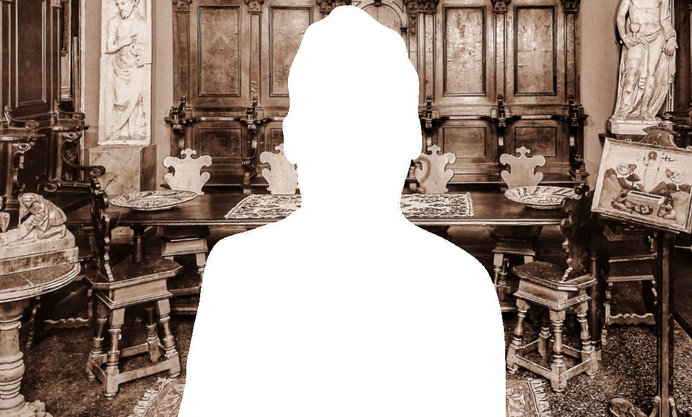

Bellesi

Consulta le banche dati della Fondazione
Federico Zeri e ricerca fotografie, documenti,
cataloghi d'asta, fondi e notizie
sull'antiquario corrente.
Nato a Firenze nel 1873, Giuseppe Bellesi iniziò la sua carriera come musicista. Negli anni giovanili conobbe il critico d’arte Matteo Marangoni (Firenze 1876-Pisa 1958) con il quale instaurò un solido legame. I due intrapresero un viaggio per l’Europa tra il 1896 e il 1901, al termine del quale Bellesi fu assunto come musicista in un locale pubblico di Londra, mentre Marangoni tornò in Italia per dedicarsi agli studi.
Nella capitale inglese Bellesi si avvicinò al mondo del mercato senza però mai perdere il contatto con Firenze. La sua attività si ricostruisce a partire dal 1924, anno in cui appare la prima inserzione su “The Burlington Magazine for Connoisseurs” che indica la sede della sua esposizione al Pall Mall Deposit di Londra, tra Carlton Street e Regent Street, indirizzo che utilizzerà fino al 1925.
Nel 1926 apre “The Italian Art Gallery” al numero civico 32 di Savile Row. Nel marzo 1929 la galleria si sposta al 174 di New Bond Street, mentre a partire dal 1937 comparirà sul Burlington con l’indirizzo 2 Duke Street. In questo arco cronologico la sua attività era un punto di riferimento per tutti i colleghi in visita a Londra o per chiunque fosse interessato a un dipinto italiano di alta epoca.
Durante la guerra Bellesi si rifugiò in Italia con la moglie, l’argentina Myriam Mendoza, e la figlia Rita Miriam (1904-1967) acquistando una villetta a Firenze in via Montughi 31. Nel 1948, tornato a Londra, Bellesi aprì una nuova sede de “The Italian Art Gallery” al numero 15 di Paddington Gress.
Giuseppe morì a Londra nel 1955. La figlia chiuse la sede inglese nel 1957 continuando la sua attività a Firenze fino alla scomparsa, nel 1967. In quell’anno la collezione Bellesi fu messa in vendita dalla Casa d’aste Pandolfini. In tale occasione, o nei mesi immediatamente successivi, Federico Zeri riuscì ad acquisire il prezioso l’archivio fotografico della galleria, incamerandolo nella propria fototeca.
Giuseppe Bellesi trattò quasi esclusivamente arte italiana medievale a moderna. Il suo nome si lega indissolubilmente a quello di Alessandro Contini Bonacossi che probabilmente si serviva di lui come intermediario per la compravendita dei quadri. Sono attestati anche rapporti diretti con Samuel Henry Kress e con il collezionista Langton Douglas. Tra il 1927 e il 1948 Bellesi fu inoltre membro del National Art Collection Fund.